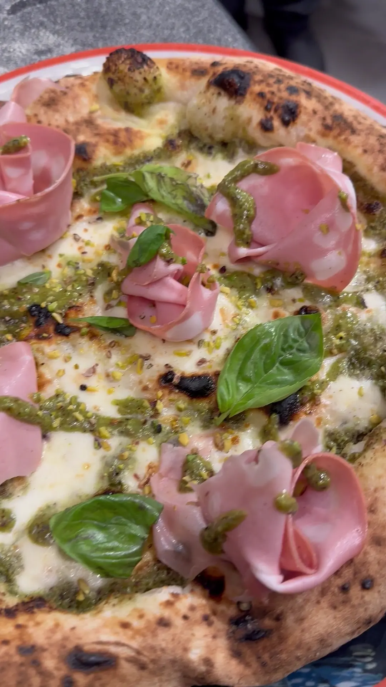
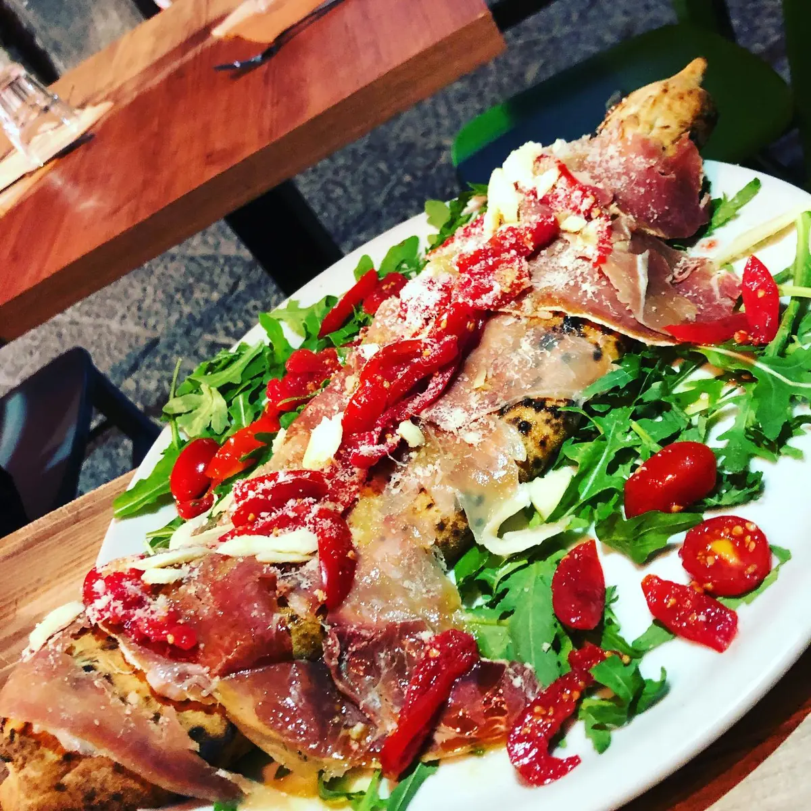
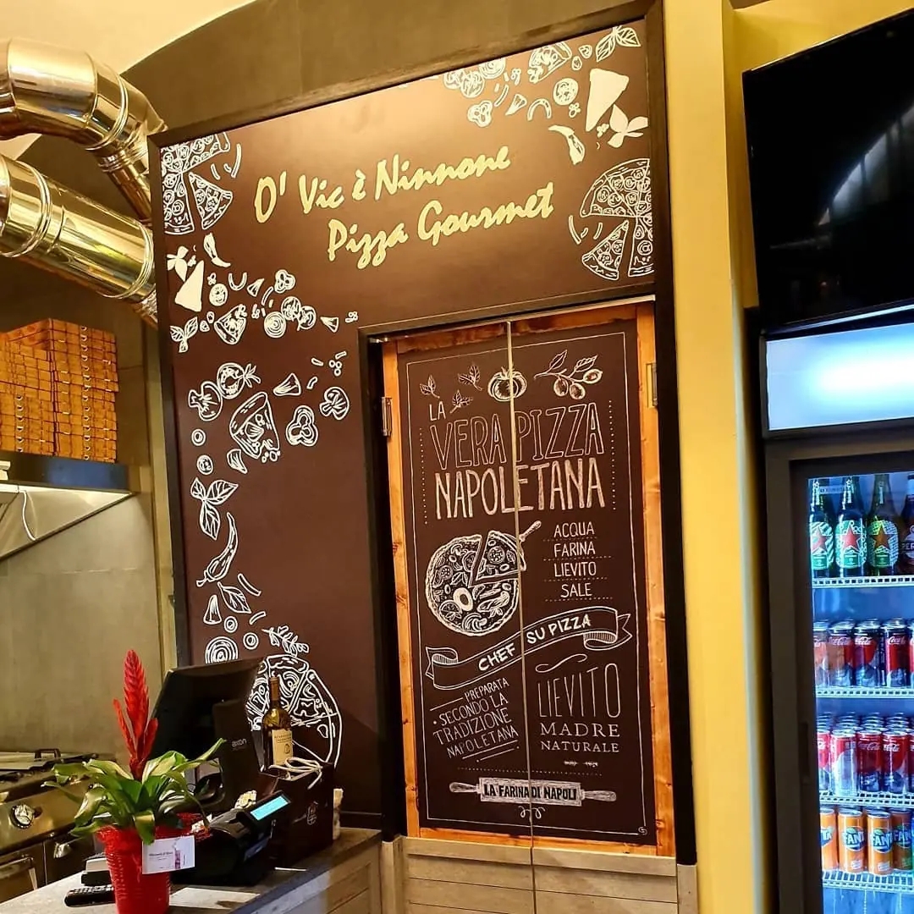

Una pizza con mortadella e basilico.

Pizzeria · Napoli, Quartieri Spagnoli
PizzeriaLaezza
Pizzeria a Napoli, in Via Speranzella, 125.
4,53724 recensioni GoogleVia Speranzella, 125, 80132 Napoli, NA

Un piatto di antipasti.

La sala, in Via Speranzella. 4,5 su 5 su Google, 3724 recensioni.
Recensioni
Cosa dicono i clienti
4,5 su 5 · 3724 recensioni su Google. Qui sotto alcune, riportate senza modifiche (i nomi sono abbreviati).
★★★★★
Io e mio marito siamo rimasti incantati da questo posto! Il personale è davvero eccezionale: sono stati gentilissimi ad aiutare mio marito nella scelta della pasta con pomodori freschi e alici, raccontandoci anche l'interessante storia dietro questo piatto, che si è rivelato delizioso.
Anche la mia pizza era semplicemente fantastica: impasto sottile, leggero e ingredienti di alta qualità. Inoltre, il personale è sempre stato molto attento e disponibile. Ci hanno persino mostrato dove viene preparata la pizza! Il pizzaiolo, che è anche il proprietario, è una persona squisita, socievole e felicissimo di fare qualche foto con noi.
In questo locale si può davvero respirare il vero spirito napoletano. Consiglio vivamente questo posto a chiunque cerchi non solo ottimo cibo, ma anche una vera esperienza di ospitalità autentica. Ci torneremo sicuramente!👌😎
★★★★★
Una Signora Pizza con la S e con la P maiuscole. Per qualità di prodotti e per impasto merita davvero di essere non solo assaggiata ma bissata più e più volte. Anche il servizio non è da meno. I camerieri sono stati disponibilissimi e cordiali. Il tutto in una via nel cuore del centro di Napoli, che ha reso il pranzo più magico di quanto mi aspettassi. Non solo ci ritornerò, ma lo sto già consigliando tantissimo agli amici: da napoletana quale sono, non è vero che tutte le pizze a Napoli sono buone. O almeno, non come questa!🫶🏻
★★★★★
La Pizzeria Laezza, nel cuore dei Quartieri Spagnoli, è un'ottima scelta per chi cerca l'autentica esperienza partenopea senza fronzoli.
il cibo è ottimo, le pizze eccezionali , i primi gustosissimi e i fritti top 🔝 (frittatine e zeppollelle di pasta promosse a pieni voti), con un impasto leggero, digeribile e cornicione pronunciato nel pieno rispetto della tradizione napoletana.
Ciliegina sulla torta...Il dolce...(in foto)
Abbiamo preso " gli scugnizzi " listarelle di pizza fritta con Nutella e pioggia di zucchero a velo. Top!!!🔝🔝🔝
L' ambiente è quello di un locale tipico, intimo e molto vivace. I tavoli all'aperto nei vicoli offrono un'atmosfera unica, ma all'interno c'è anche una saletta con aria condizionata accesa che non è scontato...
Il personale accogliente e caloroso unito a prezzi decisamente onesti e competitivi per la qualità offerta fanno di questa pizzeria una delle migliori di Napoli...e poi c'è Elisa ( una delle migliori dipendenti per gentilezza e disponibilità) con il suo incantevole sorriso e i suoi modi gentili ci ha accolto dicendoci che avremmo mangiato la pizza più buona di Napoli e aveva proprio ragione!!!
Locale straconsigliatissimo per un pranzo o una cena genuina se vi trovate in centro.
⭐⭐⭐⭐⭐
★★★★★
⭐⭐⭐⭐⭐ Esperienza fantastica nei Quartieri Spagnoli!
Abbiamo pranzato alla Pizzeria Laezza e siamo rimasti davvero entusiasti. Il cibo era ottimo, ma la pizza fritta è stata semplicemente spettacolare: croccante fuori, morbida dentro e ricca di sapore. Una delle migliori che abbiamo assaggiato a Napoli!
Il momento più bello è stato il compleanno di nostro figlio. Lo staff è stato incredibilmente gentile: sono venuti al tavolo per fargli gli auguri e gli hanno cantato la canzone di compleanno, rendendo il pranzo ancora più speciale e indimenticabile per tutta la famiglia.
Servizio eccellente, atmosfera autentica e grande ospitalità. Un posto che unisce ottimo cibo e attenzione sincera verso i clienti.
Grazie di cuore a tutto il personale! Torneremo sicuramente. ⭐⭐⭐⭐⭐🍕🎂❤️
Orari e dove siamo
Vieni a trovarci
| Lunedì | 11:30–15:30 · 18:30–23:30 |
|---|---|
| Martedì | 11:30–15:30 · 18:30–23:30 |
| Mercoledì | Chiuso |
| Giovedì | 11:30–15:30 · 18:30–23:30 |
| Venerdì | 11:30–15:30 · 18:30–23:30 |
| Sabato | 11:30–15:30 · 18:30–23:30 |
| Domenica | 11:30–15:30 · 18:30–23:30 |
Pizzeria Laezza
Via Speranzella, 125, 80132 Napoli, NA
081 1932 2748
Orari della scheda Google: nei festivi possono cambiare, chiamateci per conferma.
Via Speranzella, 125, 80132 Napoli, NA
Contatti
Scrivici
Un messaggio su WhatsApp, o una telefonata: vi risponde Pizzeria Laezza.